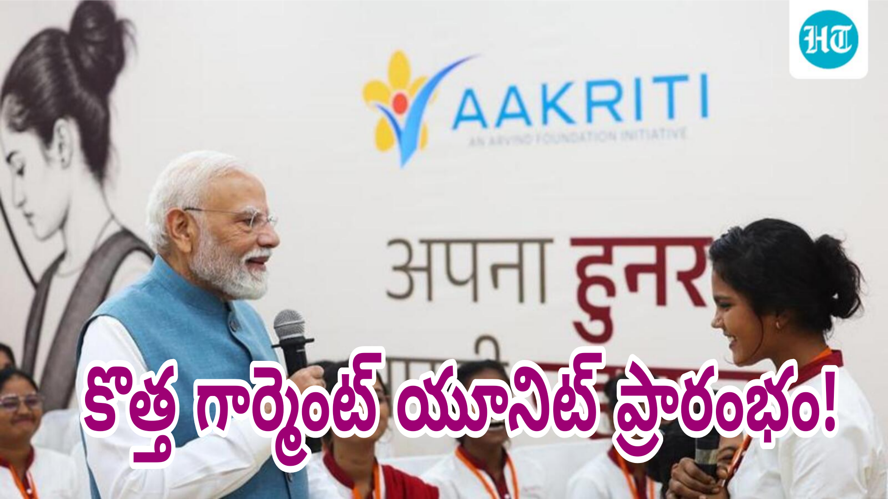

వారణాసిలో మహిళలతో ముచ్చటించిన ప్రధాని మోదీ.. కొత్త గార్మెంట్ యూనిట్ ప్రారంభం!
ఉత్తరప్రదేశ్లోని వారణాసి మరో కీలక అభివృద్ధి కార్యక్రమానికి వేదికగా నిలిచింది. ప్రధానమంత్రి నరేంద్ర మోదీ ఆదివారం (అక్టోబర్ 25) తన పార్లమెంటరీ నియోజకవర్గమైన వారణాసిలో కొత్త గార్మెంట్ తయారీ కేంద్రాన్ని ప్రారంభించారు. ఈ సందర్భంగా అక్కడ పనిచేస్తున్న మహిళా ఉద్యోగులతో ఆయన ప్రత్యేకంగా మాట్లాడారు. వారి పని విధానం, శిక్షణ, ఉద్యోగ అనుభవాలు, భవిష్యత్తు లక్ష్యాల గురించి తెలుసుకున్నారు. మహిళలకు ఉపాధి అవకాశాలు కల్పించడంతోపాటు భారతదేశంలో తయారయ్యే వస్త్రాలను అంతర్జాతీయ మార్కెట్లకు తీసుకెళ్లే దిశగా ఈ కేంద్రం కీలకంగా మారనుందని అధికారులు భావిస్తున్నారు.
అహ్మదాబాద్కు చెందిన అరవింద్ లిమిటెడ్ సంస్థ ఏర్పాటు చేసిన ఈ గార్మెంట్ తయారీ కేంద్రం ప్రారంభోత్సవం స్థానికంగా ప్రాధాన్యం సంతరించుకుంది. పారిశ్రామిక అభివృద్ధి, మహిళల ఆర్థిక స్వావలంబన, నైపుణ్యాభివృద్ధి వంటి అంశాలకు ఈ కార్యక్రమం ప్రాధాన్యం ఇచ్చింది. సంప్రదాయ వస్త్రాలకు ప్రసిద్ధి చెందిన కాశీ ప్రాంతంలో ఆధునిక దుస్తుల తయారీ పరిశ్రమ విస్తరించడం ద్వారా స్థానిక ప్రజలకు కొత్త అవకాశాలు ఏర్పడతాయని భావిస్తున్నారు.

మహిళా కార్మికులతో ప్రధాని ప్రత్యేక సంభాషణ
గార్మెంట్ యూనిట్ను ప్రారంభించిన అనంతరం ప్రధాని మోదీ అక్కడ పనిచేస్తున్న మహిళా ఉద్యోగులతో మాట్లాడారు. వారు ఎలాంటి పనులు చేస్తున్నారో, పరిశ్రమలో పనిచేయడానికి అవసరమైన నైపుణ్యాలను ఎలా నేర్చుకుంటున్నారో అడిగి తెలుసుకున్నారు. ఉద్యోగంలో ఎదురవుతున్న అనుభవాలు, శిక్షణ ద్వారా పొందుతున్న ప్రయోజనాలు, భవిష్యత్తులో సాధించాలనుకుంటున్న లక్ష్యాల గురించి మహిళలతో చర్చించారు.
ఒక పరిశ్రమ ప్రారంభించడం మాత్రమే కాకుండా, అక్కడ పనిచేసే ఉద్యోగుల అనుభవాలను నేరుగా తెలుసుకోవడం ఈ పర్యటనలో ప్రత్యేక ఆకర్షణగా నిలిచింది. మహిళలు తమ పనిని ఎలా నేర్చుకుంటున్నారు, ఆధునిక యంత్రాలను ఎలా ఉపయోగిస్తున్నారు, తయారీ ప్రక్రియలో ఎలాంటి బాధ్యతలు నిర్వహిస్తున్నారు అనే విషయాలను ప్రధాని తెలుసుకున్నారు. మహిళలకు ఉపాధి కల్పించే కార్యక్రమాలు వారి జీవితాల్లో ఎలాంటి మార్పులు తీసుకురాగలవో ఈ సందర్భంగా చర్చకు వచ్చాయి.
ఈ యూనిట్లో ఇప్పటికే 300 మందికి పైగా మహిళలను నియమించినట్లు ఉత్తరప్రదేశ్ ప్రభుత్వ వర్గాలు వెల్లడించాయి. వారిలో కొందరు శిక్షణ పొందుతున్నట్లు సమాచారం. ఈ ప్రాజెక్టు విస్తరణతో భవిష్యత్తులో మరిన్ని ఉద్యోగాలు అందుబాటులోకి వచ్చే అవకాశం ఉందని అధికారులు చెబుతున్నారు. అయితే, ఉద్యోగాల సంఖ్య పెరగడం సంస్థ విస్తరణ ప్రణాళికలు, ఉత్పత్తి సామర్థ్యం, అవసరాలపై ఆధారపడి ఉంటుంది.
మీ వయసులో ఉన్నప్పుడు మీ కల ఏమిటి?
మహిళా ఉద్యోగులతో జరిగిన సంభాషణలో ఒక ఆసక్తికరమైన ప్రశ్న కూడా ఎదురైంది. తన వయసులో ఉన్నప్పుడు ప్రధాని మోదీకి ఎలాంటి కలలు ఉండేవని ఓ మహిళా ఉద్యోగి అడిగారు. దీనికి మోదీ స్పందిస్తూ.. ప్రజలకు సేవ చేయాలనే కలతోనే తాను ముందుకు సాగుతున్నానని సమాధానమిచ్చారు. ప్రజలకు సేవ చేయాలనే లక్ష్యంతో జీవిస్తున్నట్లు ఆయన పేర్కొన్నారు.
ఈ సంభాషణ మహిళా ఉద్యోగులతో ప్రధాని పర్యటనలో గుర్తుండిపోయే అంశంగా నిలిచింది. ఉద్యోగ జీవితంలో ముందుకు సాగాలనుకునే యువతకు లక్ష్యాన్ని నిర్ణయించుకోవడం, దాని కోసం నిరంతరం కృషి చేయడం ఎంత ముఖ్యమో ఈ సందర్భంగా చర్చ జరిగింది. ఒక ఉద్యోగం ద్వారా ఆదాయం పొందడమే కాకుండా, నైపుణ్యాలను పెంచుకుంటూ భవిష్యత్తులో మరింత ఉన్నత స్థాయికి చేరుకోవచ్చనే ఆలోచనకు ఈ కార్యక్రమం ప్రాధాన్యం ఇచ్చింది.
మహిళలు తమ కుటుంబాలకు ఆర్థికంగా తోడ్పడటంతోపాటు వ్యక్తిగత లక్ష్యాలను కూడా సాధించేందుకు ఉద్యోగాలు ఉపయోగపడతాయి. ముఖ్యంగా గ్రామీణ ప్రాంతాల్లో నివసించే మహిళలకు తమ ప్రాంతానికి సమీపంలోనే ఉద్యోగాలు లభిస్తే ప్రయాణ ఖర్చులు, సమయాన్ని ఆదా చేసుకునే అవకాశం ఉంటుంది. పరిశ్రమలు స్థానికంగా ఏర్పడటం వల్ల మహిళలు తమ నైపుణ్యాలను వినియోగించుకోవడానికి కొత్త మార్గాలు అందుబాటులోకి వస్తాయి.
రూ.150 కోట్ల పెట్టుబడితో గార్మెంట్ తయారీ కేంద్రం
వారణాసిలోని మిర్జామురాద్ ప్రాంతం ఖోచ్వాన్ వద్ద అరవింద్ లిమిటెడ్ ఈ గార్మెంట్ తయారీ కేంద్రాన్ని ఏర్పాటు చేసింది. ఈ ప్రాజెక్టుకు సుమారు రూ.150 కోట్ల పెట్టుబడి పెట్టినట్లు వార్తా నివేదికలు వెల్లడించాయి. ఆధునిక వస్త్ర తయారీ పద్ధతులను ఉపయోగిస్తూ వివిధ రకాల దుస్తులను ఉత్పత్తి చేయడం ఈ కేంద్రం ప్రధాన లక్ష్యం.
ఈ పరిశ్రమ ద్వారా స్థానిక ప్రాంతంతోపాటు తూర్పు ఉత్తరప్రదేశ్లోని ఇతర ప్రాంతాల ప్రజలకు కూడా ఉపాధి అవకాశాలు ఏర్పడే అవకాశం ఉంది. వస్త్ర పరిశ్రమలో తయారీ విభాగం, నాణ్యత పరిశీలన, ప్యాకింగ్, యంత్రాల నిర్వహణ, సరఫరా వ్యవస్థ వంటి విభాగాలకు సిబ్బంది అవసరం ఏర్పడవచ్చు. అయితే, ఏ విభాగంలో ఎన్ని ఉద్యోగాలు ఉంటాయనేది సంస్థ ఉత్పత్తి ప్రణాళికలు, కార్యకలాపాలపై ఆధారపడి ఉంటుంది.
ఈ కేంద్రం ప్రారంభంతో వారణాసి ప్రాంతంలో తయారీ రంగానికి కొత్త ఊతం లభిస్తుందని భావిస్తున్నారు. ఇప్పటికే వస్త్రాలకు ప్రత్యేక గుర్తింపు ఉన్న ఈ ప్రాంతంలో ఆధునిక గార్మెంట్ పరిశ్రమ అభివృద్ధి చెందితే సంప్రదాయ వస్త్ర వ్యాపారంతోపాటు కొత్త తయారీ కార్యకలాపాలకు కూడా అవకాశాలు ఏర్పడవచ్చు.
పెద్ద పరిశ్రమల ఏర్పాటుతో ప్రత్యక్ష ఉద్యోగాలే కాకుండా రవాణా, ప్యాకింగ్ సామగ్రి, గిడ్డంగులు, నిర్వహణ సేవలు వంటి అనుబంధ రంగాల్లోనూ వ్యాపార అవకాశాలు పెరిగే అవకాశం ఉంటుంది. అయితే ఈ ప్రయోజనాలు ఎంతవరకు విస్తరిస్తాయనేది పరిశ్రమ కార్యకలాపాలు పూర్తిస్థాయిలో ప్రారంభమవడం, ఉత్పత్తి పరిమాణం, మార్కెట్ డిమాండ్ వంటి అంశాలపై ఆధారపడి ఉంటుంది.
వెయ్యికి పైగా ఉద్యోగాల కల్పన లక్ష్యం
ఈ గార్మెంట్ తయారీ కేంద్రం ద్వారా వెయ్యికి పైగా ఉద్యోగాలు కల్పించే అవకాశం ఉందని వివిధ వార్తా నివేదికలు పేర్కొన్నాయి. ముఖ్యంగా మహిళలకు ఉపాధి కల్పించడంపై ఈ ప్రాజెక్టు దృష్టి పెట్టింది. ఇప్పటికే 300 మందికి పైగా మహిళలు నియమితులై శిక్షణ పొందుతున్నట్లు ఉత్తరప్రదేశ్ ప్రభుత్వ ప్రకటనలో వెల్లడైంది.
స్థానిక మహిళలకు ఉద్యోగ అవకాశాలు కల్పించడం వల్ల కుటుంబాల ఆదాయంలో మార్పు రావచ్చు. ఇప్పటివరకు ఉపాధి కోసం ఇతర ప్రాంతాలకు వెళ్లాల్సిన అవసరం ఉన్న కొందరికి తమ ప్రాంతానికి సమీపంలోనే పనిచేసే అవకాశం లభించవచ్చు. అలాగే నైపుణ్య శిక్షణ ద్వారా కొత్త పనులు నేర్చుకోవడానికి, భవిష్యత్తులో ఇతర పరిశ్రమల్లోనూ ఉద్యోగాలు పొందేందుకు మార్గం ఏర్పడుతుంది.
వస్త్ర పరిశ్రమలో ఉద్యోగం పొందాలంటే కుట్టుపని, వస్త్రాల నాణ్యత పరిశీలన, యంత్రాల వినియోగం, ఉత్పత్తుల వర్గీకరణ వంటి పనుల్లో శిక్షణ అవసరం కావచ్చు. పరిశ్రమలు ఉద్యోగులకు తగిన శిక్షణ అందిస్తే వారి పనితీరు మెరుగుపడటంతోపాటు ఉత్పత్తి నాణ్యత కూడా పెరుగుతుంది. అందుకే ఈ ప్రాజెక్టులో శిక్షణతో కూడిన ఉద్యోగాల కల్పనకు ప్రాధాన్యం ఇవ్వడం గమనార్హం.
అయితే వెయ్యికి పైగా ఉద్యోగాలు అనే అంచనాను ఇప్పటికే అన్ని ఉద్యోగాలు భర్తీ అయ్యాయని అర్థం చేసుకోకూడదు. ప్రాజెక్టు విస్తరణతో దశలవారీగా ఉద్యోగాల సంఖ్య పెరిగే అవకాశం ఉంది. నియామకాల వివరాలు, ఖాళీలు, అర్హతలు వంటి అంశాలపై సంస్థ నుంచి వెలువడే అధికారిక ప్రకటనలను పరిశీలించడం అవసరం.
బనారస్ వస్త్రాలకు అంతర్జాతీయ మార్కెట్లలో గుర్తింపు
వారణాసి నగరం సంప్రదాయ చేనేత వస్త్రాలు, బనారసీ పట్టు చీరలు, ప్రత్యేకమైన డిజైన్లకు ప్రసిద్ధి చెందింది. తరతరాలుగా కొనసాగుతున్న నేతపని ఈ ప్రాంతానికి ప్రత్యేక గుర్తింపును తీసుకొచ్చింది. ఇప్పుడు ఆధునిక గార్మెంట్ తయారీ కేంద్రం ఏర్పాటుతో ఈ ప్రాంత వస్త్ర రంగం మరో దిశగా విస్తరించే అవకాశం ఉంది.
ఈ సందర్భంగా బనారస్లో తయారయ్యే దుస్తులు ప్రపంచ మార్కెట్లకు చేరాలని ప్రధాని మోదీ ఆకాంక్షించారు. వారణాసిలో తయారయ్యే వస్త్రాలకు అంతర్జాతీయ స్థాయిలో గుర్తింపు తీసుకురావడానికి ఆధునిక ఉత్పత్తి విధానాలు, నాణ్యత, కొత్త డిజైన్లు కీలకమని ఈ కార్యక్రమం ద్వారా స్పష్టమవుతోంది.
అరవింద్ లిమిటెడ్కు అంతర్జాతీయ కస్టమర్లతో వ్యాపార సంబంధాలు ఉండటంతో, ఈ కేంద్రంలో తయారయ్యే ఉత్పత్తులను విస్తృత మార్కెట్లకు తీసుకెళ్లేందుకు అవకాశం ఉంది. అయితే ఎగుమతుల పరిమాణం, ఏయే దేశాలకు ఉత్పత్తులు సరఫరా అవుతాయి, ఏ బ్రాండ్ల కోసం దుస్తులు తయారవుతాయి వంటి వివరాలు సంస్థ వ్యాపార ప్రణాళికలపై ఆధారపడి ఉంటాయి.
స్థానికంగా తయారైన ఉత్పత్తులు అంతర్జాతీయ మార్కెట్లకు చేరితే తయారీదారులకు విస్తృతమైన వ్యాపార అవకాశాలు ఏర్పడవచ్చు. అంతర్జాతీయ ప్రమాణాలకు అనుగుణంగా ఉత్పత్తులు తయారు చేయడం, సమయానికి సరఫరా చేయడం, నాణ్యతను కొనసాగించడం వంటి అంశాలు ఈ రంగంలో ముఖ్యమైనవి. ఈ విధంగా వారణాసి వస్త్ర రంగం సంప్రదాయ గుర్తింపుతోపాటు ఆధునిక తయారీ సామర్థ్యాన్ని కూడా పెంపొందించుకునే అవకాశం ఉంది.
ఖాదీ దుస్తుల తయారీపై కూడా దృష్టి
గార్మెంట్ యూనిట్ సందర్శన సమయంలో ప్రధాని మోదీ అక్కడ తయారవుతున్న దుస్తుల గురించి అధికారులను అడిగి తెలుసుకున్నారు. ఖాదీతో తయారైన దుస్తులు సహా వివిధ ఉత్పత్తులను పరిశీలించారు. సంస్థ ఏర్పాటు చేసిన ప్రదర్శనను కూడా సందర్శించి తయారీ కేంద్రం కార్యకలాపాల గురించి వివరాలు తెలుసుకున్నారు.
ఖాదీకి భారతదేశంలో ప్రత్యేకమైన చారిత్రక, సాంస్కృతిక ప్రాధాన్యం ఉంది. స్వదేశీ ఉత్పత్తులను ప్రోత్సహించడం, స్థానికంగా తయారయ్యే వస్తువులకు మార్కెట్ కల్పించడం వంటి లక్ష్యాలతో ఖాదీ రంగం కొనసాగుతోంది. సంప్రదాయ వస్త్రాల వినియోగాన్ని ఆధునిక దుస్తుల రూపకల్పనతో అనుసంధానించడం ద్వారా వినియోగదారులకు కొత్త ఉత్పత్తులను అందించే అవకాశం ఉంటుంది.
వస్త్ర పరిశ్రమలో సంప్రదాయ నైపుణ్యాలను ఆధునిక యంత్రాలు, ఉత్పత్తి విధానాలతో అనుసంధానిస్తే ఉత్పత్తుల వైవిధ్యం పెరుగుతుంది. అదే సమయంలో నాణ్యత, ధర, వినియోగదారుల అవసరాలు, మార్కెట్ పోటీ వంటి అంశాలను కూడా దృష్టిలో పెట్టుకోవాల్సి ఉంటుంది. వారణాసి వస్త్రాలకు ఇప్పటికే ఉన్న గుర్తింపును ఆధునిక గార్మెంట్ ఉత్పత్తులతో అనుసంధానించడం ఈ ప్రాజెక్టు ద్వారా సాధ్యమయ్యే అవకాశాల్లో ఒకటి.
మహిళా సాధికారతకు ఉద్యోగాలు ఎంత ముఖ్యం?
మహిళా సాధికారత అంటే కేవలం ఉద్యోగం పొందడం మాత్రమే కాదు. స్వయంగా ఆదాయం సంపాదించడం, ఆర్థిక నిర్ణయాల్లో భాగస్వాములు కావడం, కొత్త నైపుణ్యాలు నేర్చుకోవడం, వ్యక్తిగత లక్ష్యాలను సాధించేందుకు అవకాశాలు పొందడం కూడా ఇందులో భాగమే. ఈ దిశగా మహిళలకు సురక్షితమైన పని వాతావరణం, సరైన వేతనాలు, శిక్షణ, ఉద్యోగ భద్రత, అభివృద్ధికి అవకాశాలు అందుబాటులో ఉండటం ముఖ్యం.
గార్మెంట్ తయారీ వంటి రంగాలు సరైన శిక్షణతో మహిళలకు ఉద్యోగ అవకాశాలను అందించగలవు. ఒక మహిళకు స్థిరమైన ఆదాయం లభిస్తే కుటుంబ అవసరాలు తీర్చుకోవడానికి, పిల్లల చదువుకు సహకరించడానికి, పొదుపు చేసుకోవడానికి అవకాశం ఏర్పడవచ్చు. అయితే వాస్తవ ప్రయోజనాలు ఉద్యోగ నిబంధనలు, వేతనాలు, పని గంటలు, రవాణా సౌకర్యాలు, పని ప్రదేశంలో భద్రత వంటి అంశాలపై ఆధారపడి ఉంటాయి.
ఈ నేపథ్యంలో మహిళలకు ఉపాధి కల్పించే పరిశ్రమలు ఏర్పాటు కావడం ప్రాధాన్యం సంతరించుకుంది. ముఖ్యంగా స్థానిక మహిళలకు శిక్షణ ఇచ్చి ఉద్యోగాల్లోకి తీసుకోవడం ద్వారా పరిశ్రమల అవసరాలు, మహిళల ఉపాధి అవసరాలు రెండింటినీ అనుసంధానించవచ్చు. ఉద్యోగం ద్వారా అనుభవం సంపాదించిన మహిళలు భవిష్యత్తులో ఉన్నత బాధ్యతలు చేపట్టేందుకు కూడా అవకాశం పొందవచ్చు.
ఉత్తరప్రదేశ్లో తయారీ రంగానికి కొత్త ఊతం
ఉత్తరప్రదేశ్లో పారిశ్రామిక పెట్టుబడులను ఆకర్షించడం, స్థానికంగా ఉద్యోగాలు కల్పించడం, తయారీ రంగాన్ని విస్తరించడం వంటి లక్ష్యాలకు ఈ ప్రాజెక్టు ప్రాధాన్యం కల్పిస్తోంది. రాష్ట్రంలోని పెద్ద నగరాలకే కాకుండా ఇతర ప్రాంతాలకు కూడా పరిశ్రమలు విస్తరిస్తే ఉపాధి అవకాశాలు విస్తృతమయ్యే అవకాశం ఉంది.
వారణాసి ఆధ్యాత్మిక, పర్యాటక కేంద్రంగా ప్రసిద్ధి చెందింది. అదే సమయంలో సంప్రదాయ వస్త్ర వ్యాపారానికి కూడా ఈ నగరానికి ప్రత్యేక స్థానం ఉంది. ఇలాంటి ప్రాంతంలో ఆధునిక గార్మెంట్ తయారీ కేంద్రం ఏర్పాటవడం ద్వారా నగర ఆర్థిక కార్యకలాపాల్లో మరో రంగం చేరినట్లవుతుంది.
అయితే పరిశ్రమ ప్రారంభోత్సవం ఒక్కటే దీర్ఘకాలిక ఆర్థిక అభివృద్ధికి హామీ కాదు. ఉత్పత్తి నిరంతరంగా కొనసాగడం, మార్కెట్లో డిమాండ్ ఉండటం, కార్మికులకు తగిన వేతనాలు లభించడం, నాణ్యతను నిలబెట్టుకోవడం, స్థానిక సరఫరా వ్యవస్థ అభివృద్ధి చెందడం వంటి అంశాలు కీలక పాత్ర పోషిస్తాయి. ఈ అంశాలు సక్రమంగా కొనసాగితే పరిశ్రమ స్థానిక ఆర్థిక వ్యవస్థకు మరింత ఉపయోగపడే అవకాశం ఉంది.
మహిళల అభివృద్ధితోనే సమాజ పురోగతి
మహిళలకు ఆర్థిక అవకాశాలు కల్పించడం ద్వారా కుటుంబాలు, సమాజం, దేశ ఆర్థిక వ్యవస్థకు ప్రయోజనం కలుగుతుంది. మహిళలు ఉద్యోగాల్లో ఎక్కువగా పాల్గొంటే అందుబాటులో ఉన్న మానవ వనరులను మరింత సమర్థంగా ఉపయోగించుకోవచ్చు. వారి నైపుణ్యాలు, అనుభవం, సృజనాత్మకత ఉత్పత్తి రంగానికి ఉపయోగపడతాయి.
వారణాసి గార్మెంట్ యూనిట్ ద్వారా మహిళలకు శిక్షణ, ఉద్యోగ అవకాశాలు కల్పించాలనే లక్ష్యం ఈ అంశాన్ని మరోసారి ముందుకు తీసుకొచ్చింది. స్థానిక మహిళలు కొత్త నైపుణ్యాలను నేర్చుకుని తమ కెరీర్ను అభివృద్ధి చేసుకునే అవకాశాలు పెరగవచ్చు. అదే సమయంలో పరిశ్రమ తన లక్ష్యాలను సాధించాలంటే ఉద్యోగుల సంక్షేమం, పని ప్రదేశంలో సమాన అవకాశాలు, నాణ్యమైన శిక్షణకు ప్రాధాన్యం ఇవ్వాల్సి ఉంటుంది.
ప్రధాని మోదీ మహిళా ఉద్యోగులతో నేరుగా మాట్లాడి వారి అనుభవాలను తెలుసుకోవడం ఈ కార్యక్రమంలో ప్రధాన అంశంగా నిలిచింది. మహిళల భవిష్యత్తు లక్ష్యాల గురించి చర్చించడం, వారి పనిని పరిశీలించడం ద్వారా ఉపాధి, నైపుణ్యాభివృద్ధి అంశాలకు ప్రాధాన్యం లభించింది.
మొత్తానికి.. వారణాసిలో కొత్త అధ్యాయం
వారణాసిలో అరవింద్ లిమిటెడ్ గార్మెంట్ తయారీ కేంద్రం ప్రారంభం స్థానిక పారిశ్రామిక అభివృద్ధికి ఒక ముఖ్యమైన అడుగుగా నిలిచింది. సుమారు రూ.150 కోట్ల పెట్టుబడితో ఏర్పాటైన ఈ యూనిట్ ద్వారా వెయ్యికి పైగా ఉద్యోగాలు కల్పించే అవకాశం ఉందని నివేదికలు చెబుతున్నాయి. ఇప్పటికే 300 మందికి పైగా మహిళలు నియమితులై శిక్షణ పొందుతున్నట్లు సమాచారం.
మహిళలతో ప్రధాని మోదీ సంభాషించడం, వారి అనుభవాలను తెలుసుకోవడం, బనారస్లో తయారయ్యే దుస్తులు ప్రపంచ మార్కెట్లకు చేరాలని ఆకాంక్షించడం ఈ పర్యటనలో ముఖ్యమైన అంశాలు. ఆధునిక గార్మెంట్ తయారీని స్థానిక ఉపాధితో అనుసంధానించడంతోపాటు వారణాసి వస్త్ర రంగానికి విస్తృత అవకాశాలు కల్పించాలనే లక్ష్యం ఈ ప్రాజెక్టులో కనిపిస్తోంది.
ఈ పరిశ్రమ భవిష్యత్తులో ఎంతమందికి ఉద్యోగాలు కల్పిస్తుంది, మహిళల ఆదాయంలో ఎలాంటి మార్పులు తీసుకొస్తుంది, అంతర్జాతీయ మార్కెట్లలో ఎంతటి గుర్తింపు పొందుతుంది అనేది రాబోయే రోజుల్లో స్పష్టమవుతుంది. అయితే స్థానిక మహిళలకు శిక్షణతో కూడిన ఉపాధి కల్పించడం, తయారీ రంగాన్ని విస్తరించడం, వారణాసి వస్త్రాలకు ప్రపంచ మార్కెట్లలో అవకాశాలు పెంచడం వంటి లక్ష్యాలతో ఈ కొత్త గార్మెంట్ యూనిట్ ప్రాధాన్యం సంతరించుకుంది.